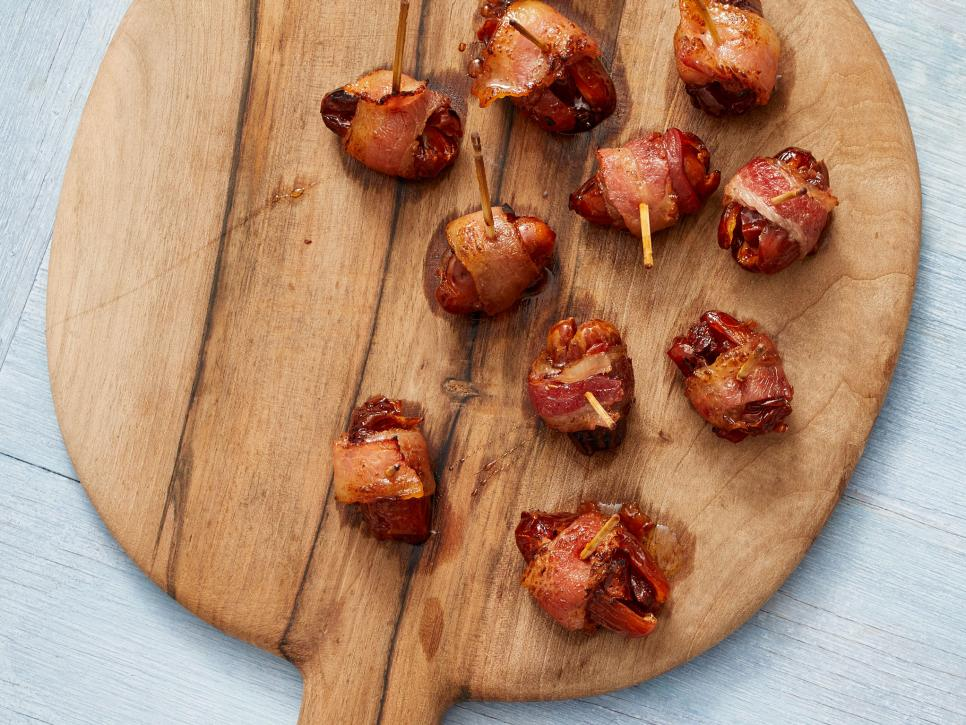
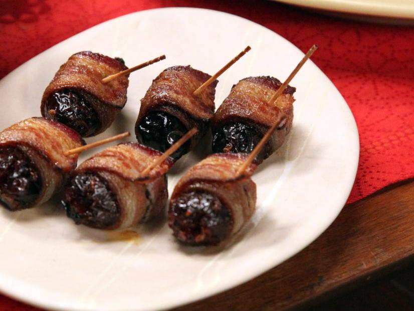

Bacon Wrapped Dates Stuffed with Chorizo
Origin: American Source: Food Network Category: Appitizer This classic, sweet-and-savory appetizer is a cinch to pull off.
- Dates
- Chorizo
- Bacon
- Maple Syrup
Recipe Steps
- Preheat the oven to 400 degrees F. Line a sheet tray with silicone baking mat or parchment.
- Make an incision on one side of each date and insert a block of chorizo. Squeeze the date shut in your hand to secure. Wrap each date with a bacon strip and secure with a toothpick. Place all the dates on the prepared sheet tray. Roast the dates in the oven until the bacon on top is starting to crisp, 5 to 6 minutes. Turn the dates over and repeat the process.
- Remove the dates from the oven and brush both sides with the maple syrup. Return the dates to the oven until the dates are really crackly and sticky, 1 to 2 minutes. Serve hot.
Additional Food Images
Sheet Pan Caprese Chicken
Origin: American Source: Food Network Category: DinnerJuicy roasted tomatoes and cheesy chicken breasts get a hint of brightness from fresh basil and a balsamic reduction.
- Olive oil
- Italian seasoning
- Kosher salt and freshly groun black pepper
- Cherry tomatoes
- Chicken breasts
- Balsamic vinegar
- Mozzarella
- Basil
Recipe Steps
- Preheat the oven to 400 degrees F. Drizzle 1 tablespoon of oil onto a rimmed baking sheet and use your fingers to evenly spread it out and coat the bottom of the pan. Sprinkle with the Italian seasoning, 1 tablespoon salt and a few grinds of pepper. Scatter the cherry tomatoes on the baking sheet and shake it back and forth so they become evenly coated in the oil and seasoning. Arrange the chicken in the center of the baking sheet, pushing the tomatoes out to the perimeter, and drizzle the chicken with the remaining tablespoon of oil.
- Bake until the tomatoes are soft, blistered and begin to burst, 20 to 25 minutes.
- Meanwhile, add the vinegar to a small saucepan and bring to a boil over medium-high heat. Lower the heat to medium and simmer until the vinegar has reduced by half and is thick enough to coat back of the spoon, 7 to 8 minutes.
- Remove the baking sheet from the oven and drape a slice of mozzarella over each chicken breast. Bake until the cheese melts and an instant-read thermometer inserted into the thickest part of the breast has reached 160 degrees F, 5 to 7 minutes (the chicken will carryover cook to 165 F).
- Sprinkle the chicken and tomatoes with the basil and drizzle with the balsamic reduction. Spoon the collected pan juices over the tomatoes and chicken. Serve on a bed of arugula and with crusty bread to mop up the pan juices.
Additional Food Images
Butternut Squash-Stuffed Shells
Origin: American Source: Food Network Category: DinnerThese stuffed shells are packed with a spicy spinach and ricotta filling and nestled in a cozy roasted butternut Alfredo sauce.
- Butternut squash
- Shallot
- Garlic
- Olive oil
- Thyme
- Sage
- Salt and ground black peper
- Jumbo pasta shells
- Vegetable broth
- Spinach
- Cream cheese
- Ricotta
- Red pepper flakes
- Parmesan
- Heavy cream
- Butter
- Nutmeg>
- Mozzarella
Recipe Steps
- Preheat the oven to 425 degrees F.
- Add the squash, shallot and garlic to a baking sheet. Drizzle with the olive oil and toss to combine. Sprinkle with the thyme, sage, 1/4 teaspoon salt and a few grinds of black pepper and toss again. Roast until the squash is tender and light golden, about 30 minutes. Let cool.
- Meanwhile, bring a large pot of water to a boil; add salt. Add the pasta shells and cook until al dente according to the package directions. Drain and let cool.
- Squeeze the roasted garlic into a small food processor or blender, add the squash, shallot and vegetable broth and puree until smooth.
- Mix together the spinach, cream cheese, ricotta, red pepper flakes, 2/3 cup of the Parmesan and 1 tablespoon salt in a large bowl. Stuff about 2 tablespoons of the spinach mixture into each shell; set aside.
- Add the pureed squash mixture, heavy cream and butter to a large skillet over medium heat. Cook, whisking frequently, until thickened, about 5 minutes. Remove from the heat and whisk in the nutmeg, 1 1/2 teaspoons salt and the remaining 1 1/3 cups Parmesan.
- Spread the cheese sauce into the bottom of a 9-by-13-inch baking dish. Arrange the stuffed shells in the baking dish seam-side up, shingling them so they all fit (you should have 5 shells along the short side and 6 shells along the long side). Top with the mozzarella. Bake until the cheese is melted and bubbling, 15 to 20 minutes. Top with more Parmesan and sage before serving.
Additional Food Images
Sheet Pan Shrimp Scampi
Origin: American Source: Food Network Category: DinnerThe whole meal--veggies, garlicky shrimp and crusty French bread--comes together on a single sheet pan.
- Summer squash
- Zucchini
- Olive oil
- Salt and ground black peper
- Butter
- Red pepper flakes
- Garlic
- Lemon zest and wedges
- Loaf of french bread
- Parmesan
- Shrimp
- Parsley
Recipe Steps
- Preheat the oven to 450 degrees F. Put the squash and zucchini on a baking sheet, drizzle with some olive oil and sprinkle with salt and pepper. Roast until golden, about 15 minutes.
- Meanwhile, combine the butter, red pepper flakes, garlic, lemon zest, 2 tablespoons olive oil, 1/2 teaspoon salt and a couple of grinds of pepper in a large microwave-safe bowl and microwave until the butter is melted, about 1 minute. Drizzle the bread evenly with 2 tablespoons of the butter mixture and sprinkle with the cheese; set aside. Toss the shrimp with the remaining butter mixture.
- After the squash and zucchini have roasted for 15 minutes, remove the baking sheet and flip the vegetables, moving them to the center third of the baking sheet. Put the bread on one outer third of the baking sheet and the shrimp on the other. Slide the vegetables closer to the bread so that the shrimp is in a single, even layer. (This is to ensure even cooking.) Return to the oven and cook until the shrimp are cooked through and the bread is golden, 10 to 12 minutes.
- Sprinkle with parsley and serve with lemon wedges.
Additional Food Images
Tiramisu
Origin: Italian Source: Food Network Category: DessertTiramisu is a coffee-flavoured Italian dessert. It is made of ladyfingers dipped in coffee, layered with a whipped mixture of eggs, sugar, and mascarpone cheese, flavoured with cocoa.
- Eggs
- Mascarpone cheese
- Sweet marsala
- Sugar
- Espresso power
- Unsweetened cocoa powder
- Ladyfingers
Recipe Steps
- For the mascarpone custard: Add the egg yolks, sugar and Marsala to a medium heatproof bowl and whisk to combine. Set the bowl over a medium saucepan of gently simmering water (do not allow the bowl to touch the water). Whisk constantly until the mixture is pale, hot to the touch and has doubled in volume, 4 to 6 minutes, scraping down the sides of the bowl occasionally with a rubber spatula. (This can be done with an electric mixer to speed up the process.) Remove from the heat and continue whisking until slightly cooled, about 1 minute. Whisk in the mascarpone cheese until combined. Refrigerate until ready to assemble.
- To assemble: Stir together 1 1/4 cups hot water, espresso powder and 3 to 4 tablespoons Marsala in a liquid measuring cup. Evenly divide the mixture between two medium bowls. Dust the bottom of an 8-by-8-inch baking dish with 1 teaspoon cocoa powder.
- Working one at a time, dip half of the ladyfingers into one bowl of the espresso mixture for 2 seconds per side, until soaked but not soggy. Arrange them over the cocoa powder in one layer, breaking up as needed to fill in any gaps. Pour any remaining liquid from the first bowl over the layer of ladyfingers. Spread half the mascarpone custard over the ladyfingers. Repeat the process with another layer of ladyfingers and the remaining bowl of espresso mixture, then spread with the remaining mascarpone custard.
- Cover with plastic wrap and refrigerate for at least 4 hours or up to overnight. Sift the remaining 1 tablespoon cocoa powder over the top just before serving.
Additional Food Images